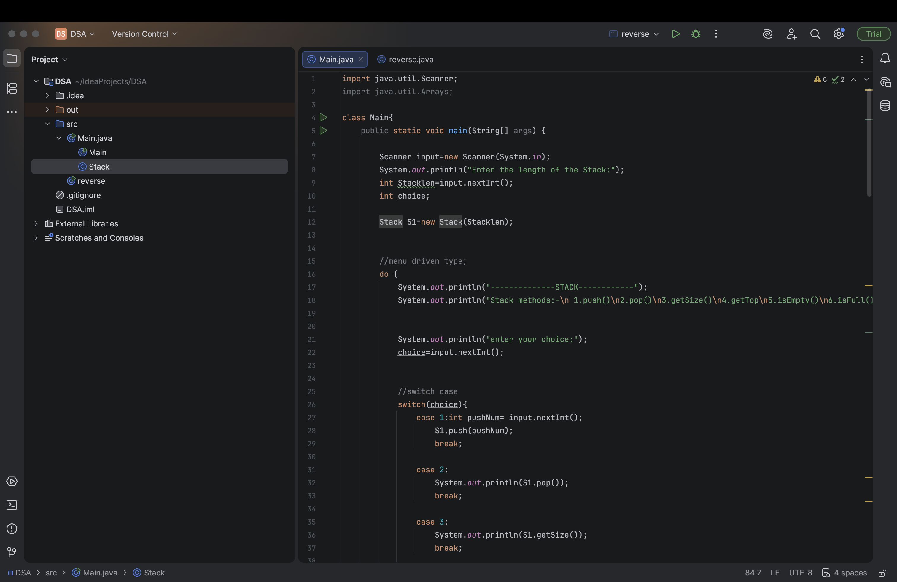

I enjoy coding and learning new programming languages. I am particularly interested in web development and artificial intelligence.

Listening to music helps me relax and stay focused while studying.
Some times listening to the nature is a source of relief
Playing sports keeps me physically active and improves teamwork skills.
My field of focus is volleyball